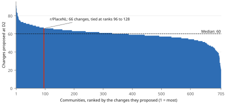

The population: the return
The model went back to every community coder, who said where it fails their community. The aggregator ruled on each change and revised the model.
- Input
- the population model sent out at the return; each community coder's saved session
- Output
- over 42,000 proposed changes, each ruled on with a reason; the revised model of 24 October (30 standing elements and 15 candidates; 21 arrows); verdicts on fit
- Who acts
- the aggregator, Claude Opus 5.5, prepares the return and rules; the 705 community coders, resumed from their saved sessions with gpt-6.1-sol; two readers per community who judge fit
- Contracts
- aggregator contract v43, stage cards D1 to D3
- Dates
- 15 to 24 October 2026
- Counts
- fit before revision: 201 communities fully, 489 in part; after: 630 fully, 56 in part
- Cost
- aggregator: 177 session hours in 61 sessions; 12,960 million cache-read and 56 million output tokens by the run's counter; the coders' tokens were not recorded (time and costs)
- Data used
- Each coder's saved session and the community's coded record. Time and versions gives every revision.
In short
What the return changed
Before the revision, two readers judged that the model composed 201 communities fully and 489 in part; after it, 630 fully and 56 in part. Where the two readers disagreed, the aggregator that revised the model ruled; at the re-check it ruled 160 of 161 such cases as composing fully. These figures are an internal check.
One case: repair and change
The first model said communities keep their work by repairing changed pixels. The return showed that repair can also undo a change the community wanted. r/PlaceNL's members planned blue canal houses and a windmill on their flag, and their own defense script erased the houses: the little houses are all being wiped away
(our translation).
Corrections from r/OnePiece and r/leagueoflegends, supported by r/monsterhunter and r/portugal, triggered the revision of P05, the model's account of repair, and the aggregator found the same mechanism in 67 communities. The revised claim: repair restores the form the keepers know, so an agreed change can be erased as damage until they are told of it. The re-check found its limit: in six communities, keepers recognized the new shape without being told. The full case on r/PlaceNL's return page.
The r/place subreddit: three entries, tested by the communities
The communities saw the event from inside. r/place itself, the subreddit where they met, recruited and negotiated, falls outside the census; the run calls it the field. A separate agent, the Field agent, read it. Its analysis was unfinished at C4, so it gave the aggregator an interim reading. That reading corrected claims about templates, the end of the canvas and communities that formed during the event, and entered two elements and an arrow as tentative, to be put to every community at the return.
| Entry | What it says | Lines | What the communities showed | Ruling |
|---|---|---|---|---|
P21 | Members dispute, or state the limits of, who may commit the community to an agreement with other communities. | 740 | shown in 162 communities | standing, 19 October; its frame rewritten |
P22 | After the canvas closes, members contest which version of the canvas and of the event is kept. | 782 | shown in 177 communities; most often a member correcting an account of the community's work (113) | standing, 16 October; its range rewritten |
A21 | An agreement made in the community's name with another community puts its members' compliance in question (P08 to P21). | 708 | the order holds in 114 of the 162 communities with such an episode | standing with a bound, 19 October |
So r/place shaped the model through the communities' own records. The comparison it was meant for, the final model against a completed model of r/place, is still pending. How C4 works · The saved C4 comparison
Two versions of the model
Show the two versions: 30 elements and 21 arrows before the return, 30 standing elements, 15 candidates and 21 arrows after it
| Version | Recorded | Elements | Arrows |
|---|---|---|---|
e15f9647 | close of C5, 15 October | 30: 23 standing, 5 candidate, 2 tentative | 21 |
46384686 | frozen at D3, 24 October | 45: 30 standing, 15 candidate | 21 |
In detail
The return in numbers
To prepare the return (D1), the aggregator wrote the model in a fixed vocabulary of 51 entries, 30 elements and 21 arrows, and built one task for each community with its expectations: 9,329 entries it expected the community to show and 311 it expected to be absent.
Every community coder answered the model twice: the model sent out on 15 October, at D2, and the revised model of 24 October, at the re-check. For each community, two readers judged whether the model composes its coding; where they disagreed, the aggregator ruled.
| First return, D2 model of 15 October | Re-check, D3 revised model of 24 October | |
|---|---|---|
| Composes fully | 201 | 630 |
| Composes in part, with residue | 489 | 56 |
| Cannot tell | 14 | 19 |
| Does not compose | 1 | 0 |
| All communities | 705 | 705 |
| settled by both readers agreeing | 542 | 544 |
| settled by the aggregator's ruling | 163 | 161 |
At the re-check the aggregator ruled 160 of its 161 disagreements as composing fully. The readers worked from the community coders' returns, and the aggregator that revised the model settled their disagreements, so these figures are an internal check.
The community coders proposed 42,243 changes at D2 and 53,493 at the re-check.
Most of them map the model onto the community: at D2, 17,648 instantiate an element and 14,675 mark one absent. The other 9,920 ask the model to change: they restrict a claim, add a step, a condition or a link, propose a new element or contradict a claim. Each community proposed between 21 and 91 changes, with a median of 60.

adaptations.jsonl.Show the changes by kind: eight kinds, from instantiating an element to contradicting a claim
| First return, D2 model of 15 October | Re-check, D3 revised model of 24 October | |
|---|---|---|
| instantiate an element | 17,648 | 22,972 |
| mark an element absent | 14,675 | 21,504 |
| restrict a claim | 4,406 | 4,345 |
| add a step | 1,889 | 1,563 |
| add a condition | 1,408 | 1,406 |
| propose a new element | 1,362 | 613 |
| add a link | 844 | 1,086 |
| contradict a claim | 11 | 4 |
| All changes | 42,243 | 53,493 |
Show how the aggregator ruled on each change: 37,918 accepted and 4,324 rejected at D2
| First return, D2 model of 15 October | Re-check, D3 revised model of 24 October | |
|---|---|---|
| Accepted | 36,682 | 47,432 |
| Accepted as particular to the community | 1,236 | 1,513 |
| Modified | 1 | 0 |
| Rejected | 4,324 | 4,548 |
| All changes | 42,243 | 53,493 |
Steps, strengths and limitations
Show the 6 steps, with r/PlaceNL beside each
Prepare the return (D1).
The model is written in a fixed vocabulary, and each community gets one task.
Answer the model (D2).
Each coder marks every element and arrow: it holds as stated, holds under a condition, is absent, or needs a step, a condition, a link or a new element. Absence is classified as absent, not needed, unobserved or not testable; only the first two count against the model.
r/PlaceNL
Line
PlaceNL-012restrict P02: A publicly proposed redesign does not become executable until protective automation and its controllers permit the new pixels.Ruling accepted as a correction: the addition was settled and the community's own upkeep erased it, a condition P02 does not state
r/PlaceNL's line at the return and the aggregator's ruling Judge the fit (D2).
Two readers judge how well the model composes each community.
r/PlaceNL
Both readers: composes with residue. The model lacks the move of live coordination into Discord and the lending of orange ground to displaced communities.
Rule and revise (D3).
The aggregator rules on every line. A correction, or the same pattern across communities, revises the model.
r/PlaceNL
Corrections from r/OnePiece and r/leagueoflegends triggered the revision of P05, the model's account of repair; the same mechanism appeared in 67 communities. The revised claim: repair restores the form the keepers know, so a planned change is erased as damage until they learn of it.
Re-check (D3).
The revised model goes back to all 705 coders, who answer again.
r/PlaceNL
One reader: composes. The other: composes with residue, because members said the moderators' plans could not control the masses.
Freeze.
We froze the revised model on 24 October; it stays unchanged to the end of the run.
Show where each component runs: 2, with their instructions and folders
| Component | Who or what | Instructions and outputs | In the repository |
|---|---|---|---|
| Instructions | stage cards D1 to D3 | D1, D2, D3 | aggregator/instrument/ |
| Returns and rulings | each community's lines, verdicts and rulings | r/PlaceNL's return | aggregator/runs/claude-v43-1/ |
The full research repository can be shared with the editor on request.
Show the strengths and limitations: 3 and 3
Strengths
- Disagreement is kept as evidence: every line and every ruling is recorded with its reason.
- Absence is separated from missing evidence, so a record's silence does not count against the model.
- The same coders re-check the revision, so a change must survive the cases that prompted it.
Limitations
- Two DeepSeek readers judged fit from each coder's return, and the aggregator that revised the model settled their disagreements, so the fit figures are an internal check.
- One model family, gpt-6.1-sol, answered every return.
- The re-check stopped halfway when the account ran out of tokens and resumed the next day.
Question the agent at its checkpoints: D1, build · D2, check · D3, the close of D3.
The community coders' D2 and D3 sessions are saved but not yet released as bundles.
In the contract
This page covers stages D1 to D3 of the contract v43 of the aggregator: the site summarizes the result of all 3, and each has saved checkpoints you can question.
| Stage | What it does | Its result on the site | Saved work |
|---|---|---|---|
D1 | Prepare to give the model back to each community | preparing the return, above | Checkpoints |
D2 | Collect the communities' answers | the return in numbers, above | Checkpoints |
D3 | Decide what the return changes | the rulings and the re-check, above | Checkpoints |
The population: introduction and all parts · How this part works